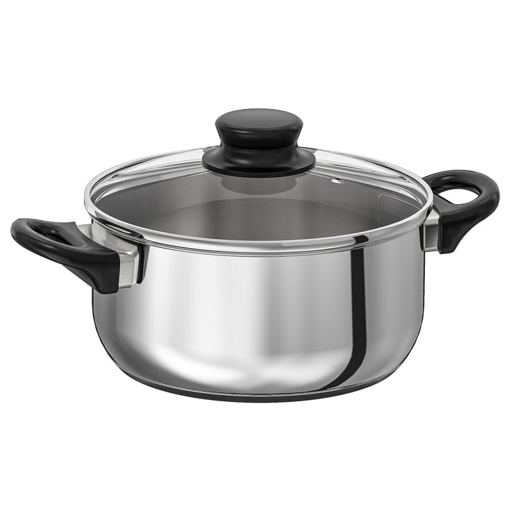
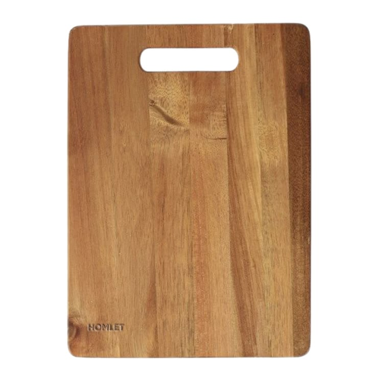
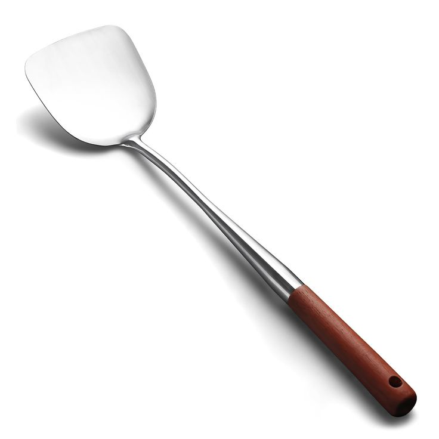
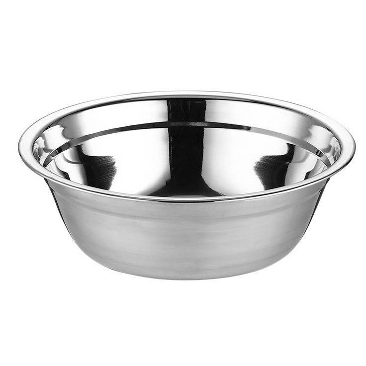
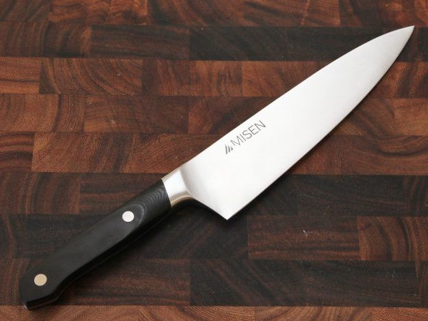
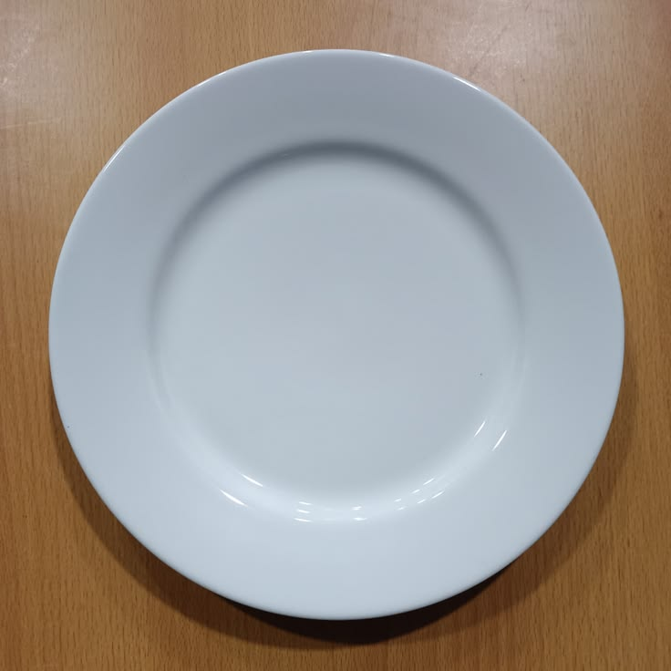
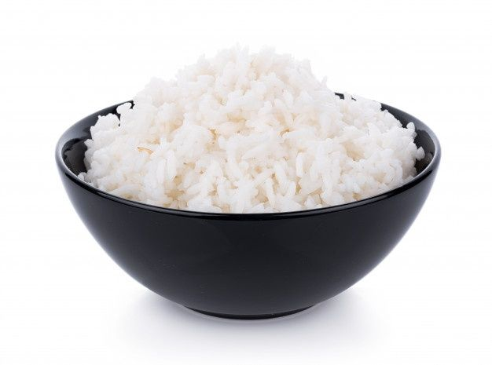
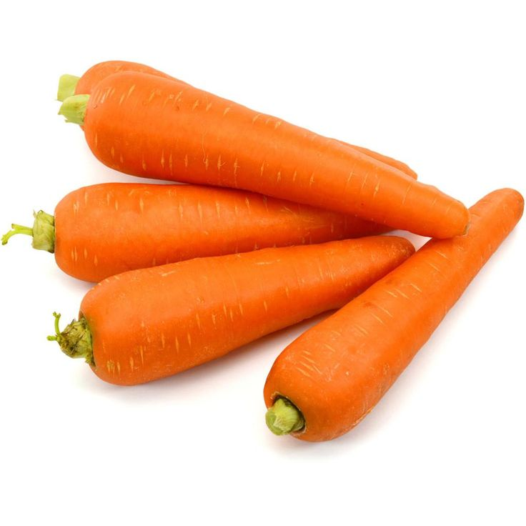

//Kotak 1
//Kotak 2
//Image map
//Kotak 1
//Kotak 2
//Image map
ALAT
|
 Panci |
 Talenan |
 Spatula |
|
 Mangkuk |
Sendok |
 Pisau |
 Penggulung Sushi |
 Piring |
Wajan |
BAHAN
|
Rumput Laut Nori |
 Nasi |
Telur |
|
 Wortel |
 Minyak Goreng |
 Minyak Wijen |
LANGKAH - LANGKAH
|
1. Siapkan Nasi Siapkan nasi yang sudah matang, tuang sedikit minyak wijen lalu aduk rata agar nasi lebih wangi dan tidak terlalu lengket. Biarkan agak dingin sebelum digunakan agar nori tidak mudah sobek. |
2. Siapkan Isian Kupas wortel lalu potong memanjang tipis menggunakan pisau di atas talenan. Rebus wortel di panci hingga empuk, lalu tiriskan. Goreng sosis di wajan dengan sedikit minyak hingga matang, lalu potong memanjang. |
3. Buat Telur Dadar Pecahkan telur ke dalam mangkuk, kocok rata. Panaskan wajan dengan sedikit minyak, tuang telur dan buat dadar tipis. Setelah matang, angkat dan potong memanjang menggunakan pisau. |
|
4. Siapkan Nori Letakkan penggulung sushi di atas meja, lalu taruh selembar rumput laut nori di atasnya. Pastikan sisi kasar nori menghadap ke atas agar nasi lebih mudah menempel. |
5. Tata Nasi & Isian Ratakan nasi di atas nori menggunakan spatula atau sendok, sisakan sekitar 2 cm di bagian ujung atas. Susun isian — telur dadar, wortel, dan sosis — secara memanjang di tengah nasi. |
6. Gulung Sushi Angkat ujung penggulung sushi perlahan, gulung nori ke depan dengan rapat sambil ditekan agar padat. Tekan gulungan dengan kuat agar bentuknya solid dan tidak mudah lepas. |
|
7. Potong Sushi Basahi pisau dengan sedikit air agar tidak lengket, lalu potong gulungan sushi menjadi 6–8 bagian dengan sekali tebas tegas di atas talenan. Hindari gerakan menggergaji agar bentuk tetap rapi. |
8. Sajikan Tata potongan sushi dengan rapi di atas piring saji. Sushi siap dinikmati! Bisa ditambahkan kecap asin atau saus sebagai pelengkap sesuai selera. |
💡 Tips Nasi yang terlalu panas akan membuat nori cepat sobek. Diamkan nasi sebentar sebelum digunakan. Gunakan minyak wijen secukupnya agar aroma sushi lebih autentik. |